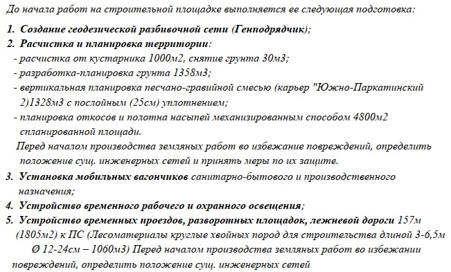

Подготовительный период строительства

Подготовительный период есть в любом проекте. Он включает все мероприятия, которые предшествуют началу основного цикла работ. Ранее мы рассматривали три этапа — организационный, мобилизационный и подготовительно-технический. Названия могут меняться, но суть одна: обеспечить готовность площадки, персонала и ресурсов.
Этот раздел можно назвать и иначе — «Подготовка к строительству», «Предварительная организация», «Подготовительные мероприятия». Главное, чтобы из названия было понятно: речь идет о комплексной подготовке к началу строительства.
Что включают подготовительные работы
В разделе описывают все предварительные действия, необходимые для старта: организацию временных объектов, оборудованием и техникой.
Если на объекте требуются моечные посты для очистки колес или мероприятия по защите окружающей среды, их также нужно указать.
Виды работ, которые может включать в себя раздел:
- организация транспортной и логистической схемы (подъезды, временные дороги, доставка материалов);
- подготовка персонала (инструктажи, обучение, оформление допусков, проверка квалификации);
- разработка графиков и календарного плана по видам работ;
- монтаж и подключение временных коммуникаций, организация экологической безопасности (при необходимости);
- проведение обследования площадки и устранение выявленных рисков;
- оценка рисков и разработка мер по их минимизации;
- ввод в работу монтажных и сварочных схем, оформление допусков на опасные участки (если применимо);
- согласование и утверждение плана организации работ заказчиком и надзорными органами;
- ввод в эксплуатацию временных объектов, включая обеспечение пожарной безопасности (при необходимости).

Таким образом, этот раздел фиксирует полный комплекс мероприятий, который обеспечивает готовность объекта, персонала и инфраструктуры к началу активной фазы строительства.
Давайте закрепим пройденный материал урока и выполним задание. Опрелите последовательность работ при подготовке к прокладке подземных коммуникаций в условиях городской застройки.